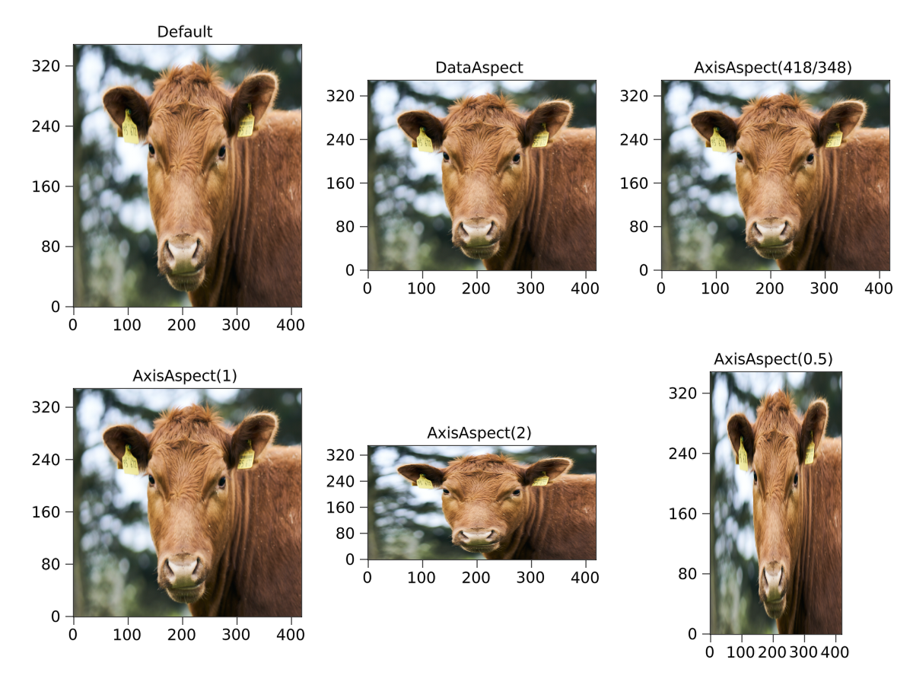

LAxis
This object represents a 2D axis that has many functions to make it more convenient to use with layouts. For a grid layout, the axis is a rectangle whose size is not yet determined, which has "protrusions" sticking out its sides. Those protrusions are the axis decorations like labels, ticks and titles. The protrusions only change if you change something about the axis attributes, but they stay the same when the layout is resized. Therefore, the main axis area will always be determined by the remaining space after the protrusions are subtracted.
The axis interacts in two directions with the layout. When the size of one of its protrusions changes, this will notify its GridContent. This will then notify its parent GridLayout and so on, until the full layout is recomputed. After that's done, the ProtrusionLayout will have received a new bounding box in which to place its content. The LAxis has a bounding box node which determines the borders of the central plot area. This is now updated and the axis' subscene is adjusted to its new size. All axis decorations also update their positions.
using MakieLayout
using Makie
using Animations
scene, layout = layoutscene(resolution = (600, 600))
axes = [LAxis(scene) for i in 1:2, j in 1:2]
layout[1:2, 1:2] = axes
a_title = Animation([0, 2], [30.0, 50.0], sineio(n=2, yoyo=true, prewait=0.2))
a_xlabel = Animation([2, 4], [20.0, 40.0], sineio(n=2, yoyo=true, prewait=0.2))
a_ylabel = Animation([4, 6], [20.0, 40.0], sineio(n=2, yoyo=true, prewait=0.2))
record(scene, "example_protrusion_changes.mp4", 0:1/60:6, framerate = 60) do t
axes[1, 1].titlesize = a_title(t)
axes[1, 1].xlabelsize = a_xlabel(t)
axes[1, 1].ylabelsize = a_ylabel(t)
endHiding axis decorations
Hiding axis decorations frees up the space for them in the layout if there are no other protrusions sticking into the same column or row gap that prevent enlarging the axis area. This makes it easy to achieve tight layouts that don't waste space. In this example, we set the column and row gaps to zero, so we can see the shrinking white space better.
using MakieLayout
using Makie
scene = Scene(resolution = (600, 600), camera=campixel!)
layout = GridLayout(
scene, 2, 2, # we need to specify rows and columns so the gap sizes don't get lost
addedcolgaps = Fixed(0),
addedrowgaps = Fixed(0),
alignmode = Outside(30))
axes = [LAxis(scene) for j in 1:2, i in 1:2]
layout[1:2, 1:2] = axes
record(scene, "example_hiding_decorations.mp4", framerate=3) do io
recordframe!(io)
for ax in axes
ax.titlevisible = false
recordframe!(io)
end
for ax in axes
ax.xlabelvisible = false
recordframe!(io)
end
for ax in axes
ax.ylabelvisible = false
recordframe!(io)
end
for ax in axes
ax.xticklabelsvisible = false
recordframe!(io)
end
for ax in axes
ax.yticklabelsvisible = false
recordframe!(io)
end
for ax in axes
ax.xticksvisible = false
recordframe!(io)
end
for ax in axes
ax.yticksvisible = false
recordframe!(io)
end
for ax in axes
ax.xspinevisible = false
ax.yspinevisible = false
ax.xoppositespinevisible = false
ax.yoppositespinevisible = false
recordframe!(io)
end
endAxis aspect ratios
If you're plotting images, you might want to force a specific aspect ratio of an axis, so that the images are not stretched. The default is that an axis uses all of the available space in the layout. You can use AxisAspect and DataAspect to control the aspect ratio. For example, AxisAspect(1) forces a square axis and AxisAspect(2) results in a rectangle with a width of two times the height. DataAspect uses the currently chosen axis limits and brings the axes into the same aspect ratio. This is the easiest to use with images. A different aspect ratio can only reduce the axis space that is being used, also it necessarily has to break the layout a little bit.
using MakieLayout
using Makie
using FileIO
scene, layout = layoutscene(30, resolution = (1200, 900))
axes = [LAxis(scene) for i in 1:2, j in 1:3]
tightlimits!.(axes)
layout[1:2, 1:3] = axes
img = rotr90(load("cow.png"))
for ax in axes
image!(ax, img)
end
axes[1, 1].title = "Default"
axes[1, 2].title = "DataAspect"
axes[1, 2].aspect = DataAspect()
axes[1, 3].title = "AxisAspect(418/348)"
axes[1, 3].aspect = AxisAspect(418/348)
axes[2, 1].title = "AxisAspect(1)"
axes[2, 1].aspect = AxisAspect(1)
axes[2, 2].title = "AxisAspect(2)"
axes[2, 2].aspect = AxisAspect(2)
axes[2, 3].title = "AxisAspect(0.5)"
axes[2, 3].aspect = AxisAspect(0.5)